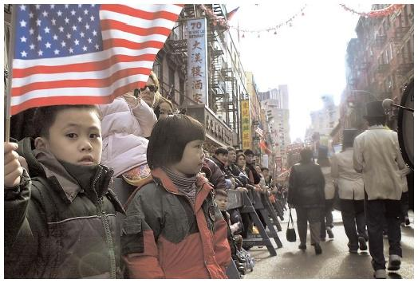
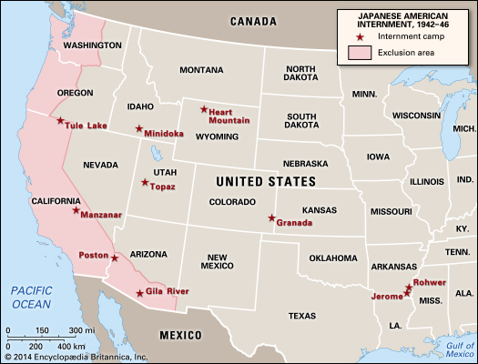

Culture and Ethnic Awareness FinalChinese Americans and Japanese AmericansChinese American's History<<<<<<< HEADChinese immigration had its pros and cons in the beginning. The pro was having more hard working laborers, but the con was that those workers would bring their culture. Chinese bringing their culture was a con back then because the European settlers would not tolorate it. Eventually the Chinese Exclusion Act was passed in 1882, and unfortunately was not repealed until 1943. After 1943 Chinese immigrants were allowed to come to America at a annual limit of 105. College students finishing education were allowed to stay and thousands of servicemen's wives were permitted to come. Other than that, chinese did not arrive in large numbers until after the passing of the 1965 Immigration Act. Chinese immigration has approached 100,000 annually. =======Chinese immigration had its pros and cons in the beginning. The pro was having more hard working laborers, but the con was that those workers would bring their culture. Chinese bringing their culture was a con back then because the European settlers would not tolorate it. Eventually the Chinese Exclusion Act was passed in 1882, and unfortunately was not repealed until 1943. After 1943 Chinese immigrants were allowed to come to America at a annual limit of 105. College students finishing education were allowed to stay and thousands of servicemen's wives were permitted to come. Other than that, chinese did not arrive in large numbers until after the passing of the 1965 Immigration Act. Chinese immigration has approached 100,000 annually. >>>>>>> parent of 2a9c146... Update 1Japanese American's HistoryThe American gvernment applied the same prohibitions to Japan as it had to China previously. Japanese in the 1890's immigrated to the U.S. and took jobs as laborers. They often suffered from poor work conditions and low wages. They seemed to be very useful to employers but did not get along with unions or fellow employees. The Japanese distinguish themselves according to the number of generations one's family has been in the U.S. Issei was the first generation, their children were Nisei. Third generation was Sansei and their children are the Yonsei. The Kibei were part of the Nisei that were sent back to Japan for schooling and arranged marriages. When the Chinese Exclusion Act of 1882 came, West Coast employers welcomed the Issei with open arms to replace the dwindling number of chinese. Eventually the same people that were anti-chinese became anti-japanese also and created the stereotype that japanese were lazy, dishonest, and untrustworthy. In 1913 California put the Alien Land Act into action. Attacks on Japanese americans were concentrated on limiting their ability to earn a living. The Issei were driven into cities where they were denied jobs due to government and union restictions. This caused them to turn to self-employment. This gave them a marginal postion in the cities' expanding economies. Executive order 9066After the attack on Pearl harbor, U.S. citizens thought we needed to "do something" about the japanese in the U.S. On February 13, 1942 President Franklin Roosevelt signed executive order 9066. This meant any person that was even just 1/8 Japanese on the West Coast were taken to assembly centers to be transfered to evactuation camps. That means 90% of all 126,000 mainland Japanese were moved to internment camps, 2/3 were citizens, 3/4 were under 25. Evacuees agreed to turn over all property and assumed risks of it, the internment destoryed them financially ======= >>>>>>> parent of 2a9c146... Update 1 Vocabulary/Key Terms |